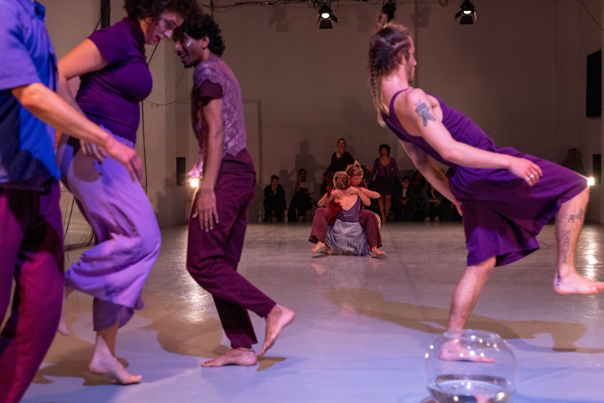
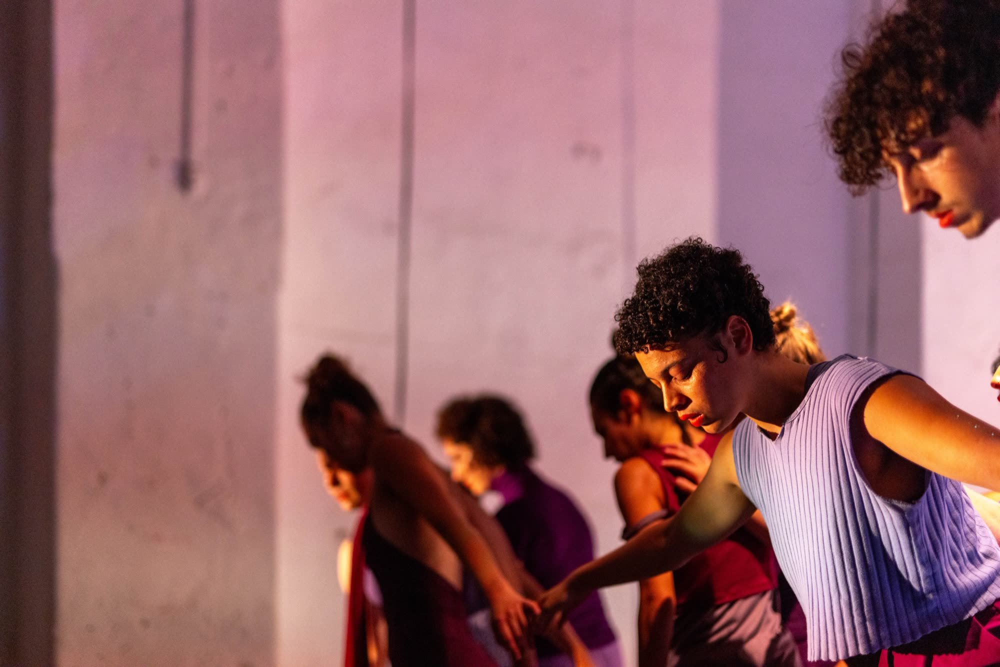
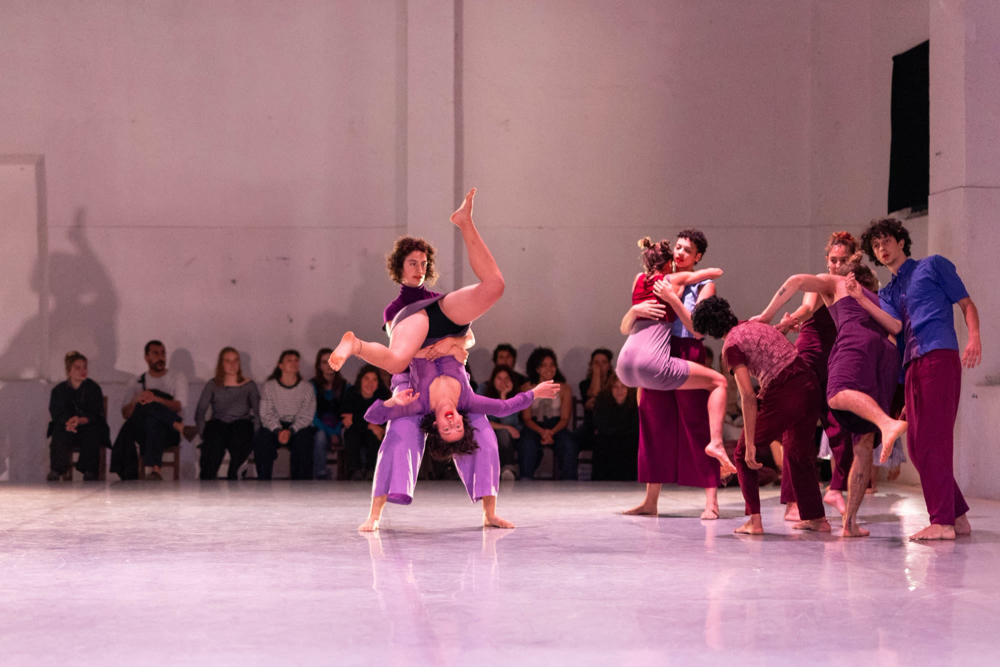

© Teodora Vujkov & Georgius Portugalos
The act of diving requires the following: inhale — take a breath, close your eyes, take a step back, embrace the void, and make sure you follow the trail — upwards.
Revoada is about following and being followed. About empathy, about unity, about letting go, and above all, about being alone, together.
Piece created for students of the Performact course in the 2023-2024 academic year.
Direction and Creation - Juliana Fernandes
Co-creation and Performance - Antoine Landrieu, Ben Mucznic, Bharath Yadav, Claudia Coretti, Franca Poort, Garance B., Lili de Bussy, Lola Saint-Gilles, Magdaléna H., Marian Rivera and Rachel Imperial
Choreographic Assistance - Massimiliano Arnone
Lighting Design and Operation - Clemence Peytoureau
Photography and Video - Teodora Vujkov and Georgius Portugalos



© Teodora Vujkov & Georgius Portugalos